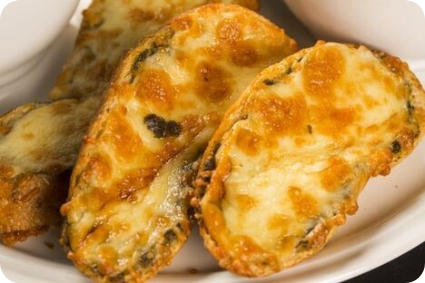

|

Terong Goreng
Mudah 15 Menit
Bahan-bahan
- 2 buah terong ungu, potong bundar dengan ketebalan sedang
- 1 bungkus tepung bumbu crispy
- 140 ml air
- Minyak goreng secukupnya
Cara Membuat
- Campurkan 1 bungkus tepung bumbu crispy dengan air, aduk rata.
- Masukkan potongan terong ke dalam adonan basah.
- Panaskan minyak goreng dengan wajan, lalu masukkan terong yang sudah diberi adonan tepung bumbu ke dalam wajan.
- Goreng hingga berwarna kuning keemasan, angkat dan tiriskan.
- Terong crispy siap disantap bersama nasi hangat.
|
|